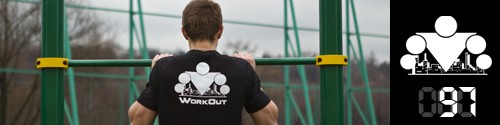

Сегодня будет последний из фристайловых комплексов, состоящий из различных видов отжиманий, так что не будем терять ни минуты (но только после хорошей разминки и всадника 30-60 секунд)!
Мало кто знает, почему данный комплекс называется именно так, но тем и знаменит Саня Прохоров из команды The Patriots, что не только умеет придумывать отличные тренировочные комплексы, но и оригинальные названия к ним!
Комплекс состоит из 5 подходов, в каждом подходе вы делаете по 5 видов отжиманий подряд, друг за другом, без отдыха:
отжимания с ногами на возвышенности (~30 см),
отжимания от пола,
отжимания с руками на возвышенности (~30 см),
отжимания от пола,
отжимания с ногами на возвышенности (~30 см).
Чтобы вам было проще понять, что нужно сделать, посмотрите видео.
В зависимости от уровня подготовки в каждом виде отжиманий делается по 5 повторений с отдыхом по 1 минуте между подходами (если новичок), по 7 повторений и отдыхом по 1-2 минуте между подходами (если продвинутый уровень) или по 10 повторений и отдыхом по 2-3 минуты между подходами (если хочется бросить себе настоящий вызов!).